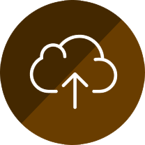

CampusLife
Explore mental-emotional-social context with smartphones
Introduction
Together with Dartmouth University, Carnegie Mellon University and Cornell University, we at Georgia Tech are interested in extending the seminal work of StudentLife, started by Dartmouth’s Andrew Campbell a few years ago. Campbell sought to determine if mental health and academic performance could be correlated, or even predicted, through a student’s digital footprint. The CampusLife project is a logical extension, which aims to collect data from relevant subsets of a campus community through their interactions with mobile and wearable technology, social media and the environment itself.
In the Spring of 2016, the CampusLife team at Georgia Tech had performed a campus wide study similar to that of Dartmouth. The data collected from the study along with follow up studies with participants brought to light many pitfalls of the deployment. Due to which it was necessary to understand why these problems occurred and how can we mitigate for a future deployment in 2017.
My Role
This is a large project involving multiple universities. The team at Georgia Tech consists of 5 PIs and 8 student researchers - each student working under a PI and focussing on a specific area for the project. The areas can be broadly divided into privacy, social, health, informatics and technology. My work was primarily guided by Gregory Abowd and lied mainly in the realm of technology but was influenced by other areas too.


Past Work
Original Dartmouth Study
StudentLife used passive and automatic sensing data from the phones of a class of 48 Dartmouth students over a 10 week term to assess their mental health (e.g., depression, loneliness, stress), academic performance (grades across all their classes, term GPA and cumulative GPA) and behavioral trends (e.g., how stress, sleep, visits to the gym, etc. change in response to college workload -- i.e., assignments, midterms, finals -- as the term progresses).
We use computational methods and machine learning algorithms on the phone to assess sensor data and make higher level inferences (i.e., sleep, sociability, activity, etc.) The StudentLife app that ran on students' phones automatically measured the following human behaviors 24/7 through the user's phones:
Sleep Timings and Duration
Number of Conversations
Physical Activity
Location
Colocated Students
Indoor/Outdoor Mobility
Stress Level
Possitive Affect
Eating Habits
App Usage
Some of the results from the study have been published on their website along with the dataset that they used.


CampusLife Spring 2016
CampusLife is Georgia Tech's effort to emulate and improve upon the work done at Dartmouth, in the context of its own campus. The researchers at GT used 2 different tools in this study for the purpose of data acquisition:

In order to meet the needs of the CampusLife, both these tools were modified accordingly. While AWARE is open-source, researchers from the team were directly involved in making changes to core mechanics. On the other hand since Quedget is a commercial product, any requirements regarding that were outsourced.
Please note, CampusLife collects some information differently (e.g. the self reported information is far more broader) than the StudentLife study, and also some new kind of information (e.g. passive activity recognition, mobile communication etc).
From Arpil 6, 2016 - May 6, 2016
Of the total 63 that were enrolled 12 were removed
The data that was collected from these studies brought forth fresh requirements for the various stakeholders in this project. Why these were necessary and how we addressed these pain points will be discussed in the following sections.
New Requirements
Stakeholders